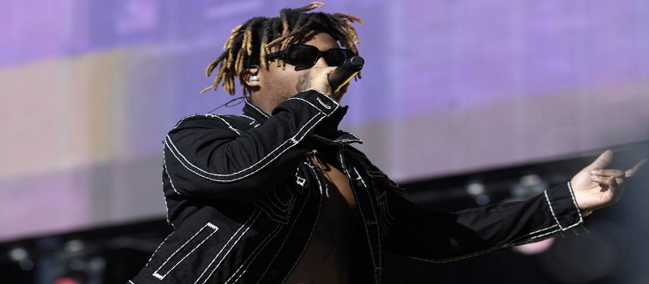

Triunfo y muerte de una generación de estrellas del rap
El fallecimiento de Juice Wrld aumenta la lista de jóvenes músicos devorados por las drogas y la violencia. Algunos familiares culpan a sus discográficas

Juice World en un concierto
El último mensaje en Instagram es del pasado 3 de diciembre, nada más terminar una gira por Australia. “Ayer fue mi cumpleaños de verdad y lo voy a celebrar toda la semana”, escribía el rapero Juice Wrld. Lo siguiente son mensajes de condolencias. Los escriben artistas de su generación, como el músico iLL Chris, el cómico Haha Davis o el director de videoclips Cole Bennett. Cinco días después de aquel mensaje, el 8 de diciembre, Juice Wrld iba de camino a Chicago en un avión privado cuando se empezó a sentir mal. Perdió el conocimiento tras aterrizar. Murió en el hospital. Su verdadero nombre era Jarad Anthony Higgins y tenía 21 años.
El viernes aún no se conocía oficialmente la causa de la muerte. Según los testigos que estaban con él, Higgins ingirió una gran cantidad de Percocet, un potente analgésico. Según esta versión, recogida por el portal TMZ, la policía estaba esperando en el aeropuerto para registrar el avión porque había recibido el soplo de que a bordo había armas y drogas. El rapero estaba intentando esconder las drogas.